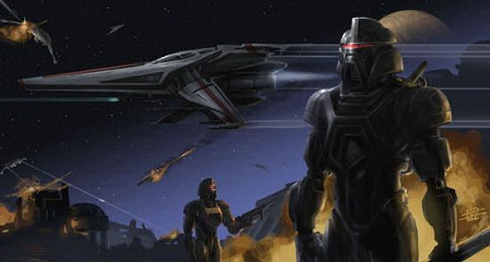

Surviving on a Cylon-Occupied Colony
As members of the Cylon Defence Force, we aim to be prepared for the coming Second Cylon War. However, even the most prepared members can find themselves surprised by the attacks.
Figure 7.2: Artist depiction of a Cylon invasion
If you find yourself unable to reach a ship or other vessel to escape from the Colonies, you will have to survive on a Cylon-occupied planet. The CDF has a list of recommendations to ensure your survival and eventual escape:
- DO evacuate the planet as soon as possible. With the Cylons in control of the ground and air, it is only a matter of time before you are discovered. Your best chance of survival is to escape the Twelve Colonies.
- DO NOT draw attention to yourself. Cylons will be patrolling the area to track down and eliminate survivors. Stay quiet, travel under the cover of night, and always watch your back.
- DO travel in groups. A team of survivors can share resources, watch out for each other, and are more effective in combat. If you find yourself alone, proceed immediately to the nearest designated CDF safehouse.
- DO NOT take actions that put the entire group at risk. Every individual must make decisions that allow the group as a whole to succeed. Individuals should cooperate and follow the instructions of the highest-ranking CDF member of the group.
- DO prioritize finding anti-radiation medication. After the attacks, the atmosphere of the planet will be highly radioactive. You will not last long without medication to combat the environment.
- DO NOT stay in one place for an extended period of time. While a safehouse is a valuable resource, staying camped in the same position allows the Cylons to surround the area. Remain in the area long enough to gather supplies and plan the next step, then move quickly.